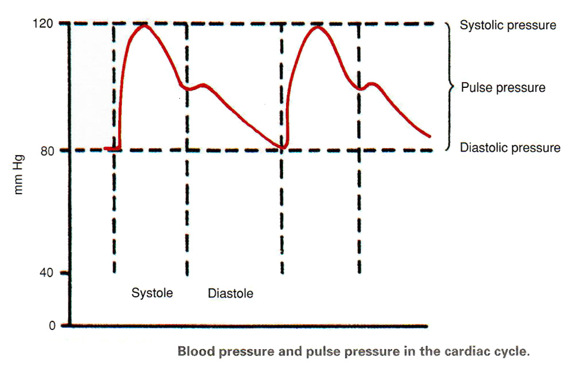

Lab3 - Module 1 - Anatomy of the Arm: Page 6 of 9
Blood Pressure Measurement
|  |
| 🔍 Tap on image to enlarge |
×

Blood pressure varies in the arterial system during the cardiac cycle, peaking in systole (systolic pressure) and falling to its lowest level in diastole (diastolic pressure). These are the levels that are measured with the blood pressure cuff (sphygmomanometer).
The difference between the systolic and diastolic pressures is known as the pulse pressure.
Measure blood pressure by auscultation:

| 1. Choose the proper size sphygmomanometer cuff: It should completely encircle the patient's bare arm about one inch above the antecubital space (at the front of the elbow) without overlapping. The cuff should cover to-thirds of the upper arm. Its bladder should be centered over the brachial artery, and cover half the arm’s circumference. Properly fitted, the cuff should fit snugly, but you should still be able to place one finger easily under its bottom edge. An improperly sized blood pressure cuff will provide an inaccurate reading. A cuff that is too small will provide a reading that is higher than it should be; a cuff that is too large will provide a reading that is lower than it should be. |
| 2. Position the arm: If the patient is seated, position the arm so that the brachial artery at the antecubital fossa is at the level of the heart. If the arm is allowed to dangle, the increase in blood flow due to gravity may provide a false high reading. If the arm is too high above the heart, it may provide a false low reading. If the patient is standing, position the arm at the mid-chest level. Regardless if standing or sitting, do not allow the patient to support his own arm by holding it up. The strain on the arm may change the blood pressure reading. |
|
3. Palpate the radial pulse: Inflate the cuff rapidly to 70 mmHg and then increase by 10-mmHg increments until the radial pulse is no longer felt. Note the number on the dial and deflate the cuff. 4. Place the stethoscope in your ears with the earpieces facing forward: Locate the brachial artery on the medial (inner) aspect of the antecubital fossa (front of the elbow). Position the head of the stethoscope over the brachial artery. Be careful not to place the stethoscope under the cuff, which will distort the sounds when listening through the stethoscope. 5. Close the thumb value and squeeze the bulb to inflate the cuff: Inflate the cuff to 30 mmHg above the level noted in step 3. 6. Slowly turn the thumb valve counter/clockwise or press the release mechanism to release air: Deflate the cuff at approximately 2 mmHg per second, watching the pressure gauge as it slowly decreases. 7. As soon as you hear the first sound (clear but dull tapping or swooshing sound), record the pressure: This is the systolic pressure. 8. Continue releasing air from the bulb: At the point where you hear the last sound, record the diastolic pressure. Continue to deflate slowly for at least 10 mmHg. With children and some adults, you may hear sounds all the way to zero. In those cases, record the pressure when the sound changes from a clear tapping to a soft, muffled tapping. |